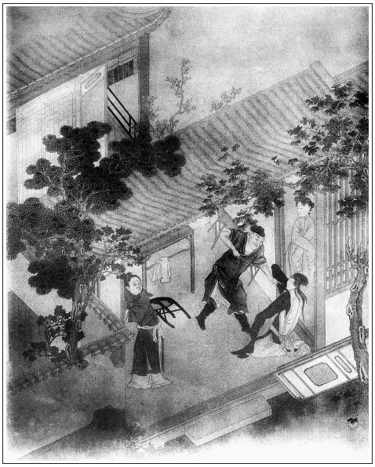

張回此回方結「冷遇親哥嫂」之人，至一百回，乃又結「冷遇」之文，方知一百回如一百顆胡珠，一線穿串卻也。
寫一伯爵，方寫一武二，又是第一回特特相照，非泛泛寫伯爵之冷暖也。
寫張二官不要金蓮之語，乃見伯爵落得做小人，不是又寫一有主見之張二官也。作者何暇為此書無因之人寫其主見？不見王三官、林氏諸人，至西門死後，久已不在此書之冊內矣。
寫月娘暗中跌腳，方知玉簫藏壺之妙。夫殺金蓮與玉簫藏壺何與哉？須知月娘與金蓮進門時，深愛之也。不深愛，不能使金蓮肆志為惡，以與諸人結仇。然而使月娘終始愛之，則小玉之私玳安，而成婚矣，如意之私來興，亦合房矣，所云家醜不可外談者是也。使金蓮不傷月娘之心，則雖有敬濟云云，或亦逐敬濟而遣大姐，金蓮未必去也。此實論時度勢之情。即月娘大有主見，令其改嫁，亦必念姊妹之情，留之家中，尋售主而遣之，此亦常情。即不然，王婆來雲，嫁於武二，月娘不傷其心，亦必參以一二言。而王婆雖貪而忘禍，特無一冷眼者提醒耳。一聞月娘言而王婆變卦，武二哥之事不穩矣。夫打死李外傳，月娘之夫幾遭毒手，豈有不冷眼覷破今日之事？乃不發一言，止暗中跌腳，且轉而與玉樓言，是其情義盡矣，其怨恨深矣。其情義盡而怨恨深者在何處？蓋在撒潑之一日。夫撒潑，又起於玉簫之透漏消息。玉簫之甘心為用，是又在書僮之私，而乃有三章之約。夫書僮之私，卻如何先安一根，則用寫藏壺也。然則書僮者，死金蓮之人也。故獨附瓶兒而不附金蓮。其必瓶兒生子而即來者，蓋即於最鬧熱，已伏一殺金蓮者矣。至於瓶兒死，則必用死金蓮矣，故即入三章約。然則三章約者，勾魂帖也。夫瓶兒為一樣淫婦，何以於生子時，不伏一死之之人？曰固早伏之矣。死瓶兒之人，即用子虛。則瓶兒未入西門，未嫁竹山之先，喬皇親花園中已伏之也。何以見子虛死之？蓋子虛以鬼胎化官哥，官哥以愛緣死瓶兒，是子虛死之也。然而非子虛死之也，金蓮死之也。又何以故？官哥不死，瓶兒不死，金蓮又死官哥之人也。子虛固欲以官哥之死死瓶兒，然非金蓮以死官哥之死授予虛，則子虛亦空為孽化耳。是金蓮死官哥，實金蓮死瓶兒也。金蓮既為死瓶兒之人，則於翡翠軒特對照一葡萄架，早早已伏一死瓶兒之人矣。是瓶兒生子而書僮來，內室乞恩而書僮附，瓶兒一死而書僮去。明似為瓶兒寫一書僮。暗卻為金蓮寫一書僮。為瓶兒寫者，見此日同寵之人，即將來同散之人，似沒甚關係。為金蓮者，蓋既從《水滸傳》中武二手內刀下奪來，終須還他殺去。夫既奪之來，而如何令之去？故必用敬濟。然徒用敬濟，何以處月娘數年之情分？使不寫其與月娘花攢錦簇四五年，又何必向武松討情分奪來？既極力描其花攢錦簇，乃為敬濟事。固應棄之如遺，亦不應知其必死而不一言。此玉簫離間之人，必不可少，而所以成此離間之人者，則因書僮。然而三章約，出之金蓮口中，則又金蓮之自殺。古人云「有機心者，必有隱禍」，蓋以此也。是故書僮，必以瓶兒生子而來，瓶兒一死即去，始終為瓶兒之荊、聶，以引起金蓮之禍端，為瓶兒九泉之笑也。然則金蓮死官哥，官哥死瓶兒，西門死武大，金蓮死西門，敬濟死金蓮，究之作者隱筆，蓋言月娘死金蓮耳。何則？暗中跌腳故也。夫月娘之所以必死金蓮，而不一救之者，由於「撒潑」。「撒潑」由於玉簫。玉簫過舌，則因瓶兒之衣，如意之宿，是又瓶兒之靈殺之也。究之玉簫之所以肯過舌者，三章約也，是金蓮固自殺。而三章約，所以肯遵依，是又書僮之故。然則「藏壺」而雲構釁，真非一日一人一事之釁也歟！危機相倚，如層波疊起，不可窮止。何物作者，能使大千世界，生生死死之苦海水，盡掬入此一百胡珠之線內？嘻！技至此，無以復加矣。
詩曰：
悠悠嗟我裡，世亂各東西。
存者問消息，死者為塵泥。
賤子家既敗，壯士歸來時。張夾四句哭盡。
行久見空巷，日暮氣慘淒。
但逢狐與狸，豎毛怒裂眥。
我有鐲鏤劍，對此吐長霓。張夾為冷兄弟，一吐憤氣，已貫日虹矣。

話說陳敬濟雇頭口起身，叫了張團練一個伴當跟隨，早上東京去不題。卻表吳月娘打發潘金蓮出門，次日使春鴻叫薛嫂兒來，要賣秋菊。這春鴻正走到大街，撞見應伯爵，叫住問：「春鴻，你往那裡去？」春鴻道：「大娘使小的叫媒人薛嫂兒去。」伯爵問：「叫媒人做甚麼？」春鴻道：「賣五娘房裡秋菊丫頭。」伯爵又問：「你五娘為甚麼打發出來嫁人？」這春鴻便如此這般，「因和俺姐夫有些說話，大娘知道了，先打發了春梅小大姐，張夾便不是大姑娘，可歎可歎！然後打了俺姐夫一頓，趕出往家去了。昨日才打發出俺五娘來。」伯爵聽了，點了點頭兒，說道：「原來你五娘和你姐夫有楂兒，看不出人來。」又向春鴻說：「孩兒，你爹已是死了，你只顧還在他家做甚麼？終是沒出產。張夾一個「他家」。你心裡還要歸你南邊去？還是這裡尋個人家跟罷。」春鴻道：「便是這般說。老爹已是沒了，家中大娘好不嚴緊，各處買賣都收了，房子也賣了，琴童兒、畫童兒都走了，張夾點出。也攬不過這許多人口來。小的待回南邊去，又沒順便人帶去。張夾所謂無便鴻是也。這城內尋個人家跟，又沒個門路。」伯爵道：「傻孩兒，人無遠見，安身不牢。繡眉為利不多，奉承有限，何苦定要攛掇春鴻去？此不失其小人之為小人也。千山萬水，又往南邊去做甚？你肚裡會幾句唱，愁這城內尋不出主兒來答應。我如今舉保個門路與你。如今大街坊張二老爹家，有萬萬貫家財，見頂補了你爹在提刑院做掌刑千戶。如今你二娘又在他家做了二房，張夾此「他家」，與那「他家」不同。我把你送到他宅中答應，他見你會唱南曲，管情一箭就上垛，留下你做個親隨大官兒，又不比在你家裡。他性兒又好，年紀小小，又倜儻，又愛好，你就是個有造化的。」這春鴻扒倒地下就磕了個頭：「有累二爹。小的若見了張老爹，得一步之地，買禮與二爹磕頭。」伯爵一把手拉著春鴻說：「傻孩兒，你起來，我無有個不作成人的，肯要你謝？你那得錢兒來！」春鴻道：「小的去了，只怕家中大娘抓尋小的怎了？」伯爵道：「這個不打緊。我問你張二老爹討個帖兒，封一兩銀子與他家。張夾兩個他家。他家銀子不敢受，張夾三個「他家」，與上文無數「大官人」、「哥」字相映也。不怕不把你不雙手兒送了去。」說畢，春鴻往薛嫂兒家，叫了薛嫂兒。見月娘，領秋菊出來，只賣了五兩銀子，交與月娘，不在話下。張夾秋菊原為去金蓮之楔，金蓮去矣。則秋菊不賣安用哉？
卻說應伯爵領春鴻到張二官宅裡見了。張二官見他生的清秀，又會唱南曲，就留下他答應。便拿拜帖兒，封了一兩銀子，送往西門慶家，討他箱子。那日吳月娘家中正陪雲理守娘子范氏吃酒。先是雲理守補在清河左衛做同知，見西門慶死了，吳月娘守寡，手裡有東西，就安心有垂涎圖謀之意。繡旁隱隱伏夢中之案。張夾與夢境一照。此日正買了八盤羹果禮物，來看月娘。見月娘生了孝哥，范氏房內亦有一女，方兩月兒，要與月娘結親。那日吃酒，遂兩家割衫襟，做了兒女親家，留下一雙金環為定禮。張夾此官哥結親何如？聽見玳安兒拿進張二官府帖兒，並一兩銀子，說春鴻投在他家答應去了，使人來討他箱子衣服。月娘見他見做提刑官，張夾一語千古傷心，夫當日不自家現做哉？不好不與他，銀子也不曾收，只得把箱子與將出來。
初時，應伯爵對張二官說：「西門慶第五娘子潘金蓮生得標緻，會一手琵琶。百家詞曲，雙陸象棋，無不通曉，又會寫字。因為年小守不的，又和他大娘合氣，今打發出來，在王婆家嫁人。」這張二官一替兩替使家人拿銀子往王婆家相看，王婆只推他大娘子分付，不倒口要一百兩銀子。那人來回講了幾遍，還到八十兩上，王婆還不吐口兒。落後春鴻到他宅內，張二官聽見春鴻說，婦人在家養育女婿方打發出來。張旁春鴻又助書僮一臂，方可逼死金蓮。這張二官就不要了，對著伯爵說：「我家現放著十五歲未出幼兒子上學攻書，要這樣婦人來家做甚？」張夾寫張二官，總欲使伯爵一個小人做到地也，豈真有張二官哉？又聽見李嬌兒說，繡眉他婦人失節，俱有報應，獨李嬌兒一番花燭一番新。想猖妓迎新棄舊是其本分事，故天縱之耳。金蓮當初用毒藥擺佈死了漢子，被西門慶占將來家，又偷小廝，把第六個娘子娘兒兩個，生生吃他害殺了。張夾金蓮罪案一總。以此張二官就不要了。
話分兩頭。卻說春梅賣到守備府中，守備見他生的標緻伶俐，舉止動人，心中大喜。與了他三間房住，手下使一個小丫鬟，就一連在他房中歇了三夜。三日，替他裁了兩套衣服。張夾所謂不圖嫁時衣也。薛嫂兒去，賞了薛嫂五錢銀子。又買了個使女扶侍他，立他做第二房。大娘子一目失明，吃長齋念佛，不管閒事。還有生姐兒孫二娘，在東廂居住。春梅在西廂房，各處鑰匙都教他掌管，甚是寵愛他。一日，聽薛嫂兒說，金蓮出來在王婆家聘嫁，這春梅晚夕啼啼哭哭對守備說：張夾金蓮家法。「俺娘兒兩個，在一處廝守這幾年，他大氣兒不著呵著我，把我當親女兒一般看承。只知拆散開了，不想今日他也出來了，你若肯娶將他來，俺娘兒每還在一處，過好日子。」又說他怎的好模樣兒，諸般詞曲都會，又會彈琵琶。聰明俊俏，百伶百俐。屬龍的，今才三十二歲兒。「他若來，奴情願做第三也罷。」繡眉春梅自忘金蓮不得，然如春梅而忘金蓮者多矣，則春梅一段感恩圖報之懷，夫豈易及。於是把守備念轉了，使手下親隨張勝、李安封了二方手帕，二錢銀子，往王婆家相看，果然生的好個出色的婦人。王婆開口指稱他家大娘子要一百兩銀子。張勝、李安講了半日，還了八十兩，那王婆還不肯。走來回守備，又添了五兩，復使二人拿著銀子和王婆說。王婆只是假推他大娘子不肯不轉口兒，要一百兩：「媒人錢不要便罷了，天也不使空人。」繡旁說不要，又找上，貪甚。這張勝、李安只得又拿回銀子來稟守備。
丟了兩日，怎禁這春梅晚夕啼啼哭哭：「好歹再添幾兩銀子，娶了來和奴做伴兒，死也甘心。」守備見春梅只是哭泣，只得又差了大管家周忠，張夾已伏周義。同張勝、李安，氈包內拿著銀子，打開與婆子看，又添到九十兩上。婆子越發張致起來，說：「若九十兩，到不的如今，提刑張二老爹家抬的去了。」張夾差十兩，又照挨光。這周忠就惱了，分付李安把銀子包了，說道：「三隻腳蟾便沒處尋，兩腳老婆愁尋不出來！這老淫婦連人也不識。你說那張二官府怎的，俺府裡老爹管不著你？不是新娶的小夫人再三在老爺跟前說念，要娶這婦人，平白出這些銀子，要他何用！」李安道：「勒掯俺兩番三次來回，賊老淫婦，越發鸚哥兒風了！」拉著周忠說：「管家，咱去來，到家回了老爺，好不好教牢子拿去，拶與他一頓好拶子。」這婆子終是貪著陳敬濟那口食，由他罵，只是不言語。繡眉貪利不畏禍，注意已定。張夾為武二作地，非照應敬濟也。二人到府中，回稟守備說：「已添到九十兩，還不肯。」守備說：「明日兌與他一百兩，拿轎子抬了來罷。」周忠說：「爺就與了一百兩，王婆還要五兩媒人錢。且丟他兩日，他若張致，拿到府中拶與他一頓拶子，他才怕。」看官聽說，大段金蓮生有地而死有處，不爭被周忠說這兩句話。有分交：這婦人從前作過事，今朝沒興一齊來。有詩為證：
人生雖未有前知，禍福因由更問誰。
善惡到頭終有報，只爭來早與來遲。
按下一頭。單表武松自從墊發孟州牢城充軍之後，多虧小管營施恩看顧。次後，施恩與蔣門神爭奪快活林酒店，被蔣門神打傷，央武松出力，反打了蔣門神一頓。不想蔣門神妹子玉蘭，嫁與張都監為妾，賺武鬆去，假捏賊情，將武松拷打，轉又發安平寨充軍。這武松走到飛雲浦，又殺了兩個公人，復回身殺了張都監、蔣門神全家老小，逃躲在施恩家。施恩寫了一封書，皮箱內封了一百兩銀子，教武松到安平寨與知寨劉高，教看顧他。張夾一路將《水滸》接入。不想路上聽見太子立東宮，放郊天大赦，武松就遇赦回家，到清河縣下了文書，依舊在縣當差，還做都頭。來到家中，尋見上鄰姚一郎，交付迎兒。張夾千里一脈。那時迎兒已長大十九歲了，收攬來家，一處居住。就有人告他說：「西門慶已死，你嫂子又出來了，如今還在王婆家，早晚嫁人。」這漢子聽了，舊仇在心。正是：
踏破鐵鞋無覓處，得來全不費工夫。
次日，理幘穿衣，逕走過間壁王婆門首。金蓮正在簾下站著，見武松來，連忙閃入裡間去。武松掀開簾子便問：「王媽媽在家？」那婆子正在磨上掃面，連忙出來應道：「是誰叫老身？」見是武松，道了萬福。武松深深唱喏。婆子道：「武二哥，且喜，幾時回家來了？」武松道：「遇赦回家，昨日才到。一向多累媽媽看家，改日相謝。」婆子笑嘻嘻道：「武二哥比舊時保養，鬍子楂兒也有了，且是好身量，在外邊又學得這般知禮。」繡眉連連說舊時，如今胸中已抹過從前。張夾以此方忘舊事。一面請他上坐，點茶吃了。武松道：「我有一樁事和媽媽說。」婆子道：「有甚事？武二哥只顧說。」武松道：「我聞的人說，西門慶已是死了，我嫂子出來，在你老人家這裡居住。敢煩媽媽對嫂子說，他若不嫁人便罷，若是嫁人，如今迎兒大了，娶得嫂子家去，看管迎兒，早晚招個女婿，一家一計過日子，庶不教人笑話。」婆子初時還不吐口兒，便道：「他在便在我這裡，倒不知嫁人不嫁人。」張夾還有防患之心。次後聽見說謝他，便道：「等我慢慢和他說。」繡眉武松之為人與報仇之意，王婆、金蓮昔所日夜憂心者，而今竟若忘之，何哉？一為利昏，一為淫迷，故只以為已往之事，不深思矣。
那婦人在簾內聽見武松言語，要娶他看管迎兒，又見武松在外出落得長大身材，胖了，比昔時又會說話兒，舊心不改，心下暗道：「我這段姻緣還落在他手裡。」就等不得王婆叫他，繡旁此時置敬濟於何地？自己出來，張夾必如此寫來，方使金蓮肯嫁武二有情理。不然金蓮十二分聰明人，豈不知防患乎？向武松道了萬福，說道：「既是叔叔還要奴家去看管迎兒，招女婿成家，可知好哩。」王婆道：「我一件，只如今他家大娘子，要一百兩銀子才嫁人。」武松道：「如何要這許多？」王婆道：「西門大官人，當初為他使了許多，就打恁個銀人兒也勾了。」張夾這一句豈是告武二的話？武松道：「不打緊，我既要請嫂嫂家去，就使一百兩也罷。另外破五兩銀子，與你老人家。」這婆子聽見，喜歡的屁滾尿流，沒口說道：「還是武二哥知禮，這幾年江湖上見的事多，真是好漢。」婦人聽了此言，走到屋裡，又濃濃點了一鍾瓜仁泡茶，雙手遞與武松吃了。張夾比雪天圍爐何如？婆子問道：「如今他家要發脫的緊，又有三四個官戶人家爭著娶，都回阻了，價錢不兌。你這銀子，作速些便好。常言先下米先吃飯，千里姻緣著線牽，休要落在別人手內。」婦人道：「既要娶奴家，叔叔上緊些。」繡旁自促其死。張夾猶稱叔叔，妙。武松便道：「明日就來兌銀子，晚夕請嫂嫂過去。」那王婆還不信武松有這些銀子，胡亂答應去了。
到次日，武松打開皮箱，拿出施恩與知寨劉高那一百兩銀子來，又另外包了五兩碎銀子，走到王婆家，拿天平兌起來。那婆子看見白晃晃擺了一桌銀子，口中不言，心內暗道：「雖是陳敬濟許下一百兩，上東京去取，不知幾時到來。仰著合著，我見鍾不打，去打鑄鍾？」又見五兩謝他，連忙收了。拜了又拜，說道：「還是武二哥知人甘苦。」武松道：「媽媽收了銀子，今日就請嫂嫂過門。」婆子道：「武二哥，且是好急性。『門背後放花兒──你等不到晚了』？繡眉死將至，且歡歡喜喜說戲話，世人大都如此。張夾財之迷人如此。也待我往他大娘那裡交了銀子，才打發他過去。」又道：「你今日帽兒光光，晚夕做個新郎。」張夾財之迷人如此。那武鬆緊著心中不自在，那婆子不知好歹，又奚落他。打發武松出門，自己尋思：「他家大娘只叫我發脫，又沒和我斷定價錢，我今胡亂與他一二十兩銀子就是了，綁著鬼也落他一半多養家。」就把銀鑿下二十兩銀子，往月娘家裡交割明白。月娘問：「甚麼人家娶去了？」王婆道：「兔兒沿山跑，還來歸舊窩。嫁了他家小叔，還吃舊鍋裡粥去了。」月娘聽了，暗中跌腳，張夾月娘死金蓮以此，書僮死金蓮又以此。常言「仇人見仇人，分外眼睛明」，與孟玉樓說：「往後死在他小叔子手裡罷了。繡旁旁觀便清。那漢子殺人不斬眼，豈肯干休！」張夾此處方知必用「撒潑」以後，方使月娘不言而棄之之妙也。
不說月娘家中歎息，卻表王婆交了銀子到家，下午時，教王潮兒先把婦人箱籠桌兒送過去。張夾何以別王潮。這武松在家中又早收拾停當，打下酒肉，安排下菜蔬。晚上婆子領婦人過門，換了孝，張旁是西門孝，不是武大孝。帶著新䯼髻，身穿紅衣服，搭著蓋頭。進門來，見明間內明亮亮點著燈燭，張夾細。重立武大靈牌供養在上面，張旁是武大靈，不是西門靈。張夾方知冷遇之兄弟不假。先有些疑忌，由不的發似人揪，肉如鉤搭。進入門來，到房中，武松分付迎兒把前門上了拴，張夾前門。後門也頂了。張夾後門。比雪天金蓮頂後門何如？王婆見了，說道：「武二哥，我去罷，家裡沒人。」武松道：「媽媽請進房裡吃盞酒。」武松教迎兒拿菜蔬擺在桌上，須臾燙上酒來，請婦人和王婆吃酒。那武松也不讓，把酒斟上，一連吃了四五碗酒。張旁好壯膽殺人。婆子見他吃得惡，張夾寫得惡。便道：「武二哥，老身酒勾了，放我去，你兩口兒自在吃罷。」武松道：「媽媽，且休得胡說！我武二有句話問你！」只聞颼的一聲響，向衣底掣出一把二尺長刃薄背厚的朴刀來，張夾描寫刀。一隻手籠著刀靶，張夾右手。一隻手按住掩心，張夾左手。便睜圓怪眼，倒豎剛須，張夾畫。說道：「婆子休得吃驚！自古冤有頭，債有主，休推睡裡夢裡。我哥哥性命都在你身上！」婆子道：「武二哥，夜晚了，酒醉拿刀弄杖，不是耍處。」張夾亦著急語。武松道：「婆子休胡說，我武二就死也不怕！張旁言必殺人也。等我問了這淫婦，慢慢來問你這老豬狗！張夾又撇王婆。若動一動步兒，先吃我五七刀子。」一面回過臉來，看著婦人罵道：張夾迅速之至。「你這淫婦聽著！我的哥哥怎生謀害了？從實說來，我便饒你。」那婦人道：「叔叔如何冷鍋中豆兒炮？好沒道理！你哥哥自害心疼病死了，干我甚事？」說由未了，武松把刀子忔楂的插在桌子上，張旁騰出左右手也。張夾又寫刀。用左手揪住婦人云髻，右手匹胸提住，把桌子一腳踢翻，碟兒盞兒都打得粉碎。張夾特寫桌子。那婦人能有多大氣脈，被這漢子隔桌子輕輕提將起來，拖出外間靈桌子前。張夾迅速之極。那婆子見勢頭不好，便去奔前門走，前門又上了栓。被武松大扠步趕上，揪翻在地，用腰間纏帶解下來，四手四腳捆住，如猿猴獻果一般，便脫身不得，張夾又照管婆子。口中只叫：「都頭不消動意，大娘子自做出來，不干我事。」武松道：「老豬狗，我都知道了，你賴那個？你教西門慶那廝墊發我充軍去，今日我怎生又回家了！張夾又說自己話。西門慶那廝卻在那裡？張夾又找西門。你不說時，先剮了這個淫婦，後殺你這老豬狗！」張夾又照到婦人，一時如畫。提起刀來，張夾又寫刀。便望那婦人臉上撇了兩撇。張夾畫。
婦人慌忙叫道：「叔叔且饒，放我起來，等我說便了。」武松一提，提起那婆娘，旋剝淨了，張夾趁勢旋剝。跪在靈桌子前。武松喝道：「淫婦快說！」那婦人諕得魂不附體，只得從實招說，將那時收簾子打了西門慶起，並做衣裳入馬通姦，後怎的踢傷武大心窩，王婆怎地教唆下毒，撥置燒化，又怎的娶到家去，一五一十，從頭至尾，說了一遍。繡眉金蓮何等慧心巧舌，到英雄手中，都用不著。張夾三個「怎的」直對打虎。王婆聽見，只是暗中叫苦，說：「傻才料，你實說了，卻教老身怎的支吾。」繡眉到此時，任王婆利嘴，亦難支吾。張夾又寫婆子。這武松一面就靈前一手揪著婦人，一手澆奠了酒，把紙錢點著，說道：「哥哥，你陰魂不遠，今日武松與你報仇雪恨。」張夾聲淚俱盡。那婦人見勢頭不好，才待大叫。張夾又寫婦人。被武松向爐內撾了一把香灰，塞在他口，就叫不出來了。然後劈腦揪番在地。那婦人掙扎，把䯼髻簪環都滾落了。繡旁比馬嵬更慘。張旁先是提起，令他跪著說，此又揪番殺之也。真是活武二。武松恐怕他掙扎，先用油靴只顧踢他肋肢，張夾直對打虎。後用兩隻腳踏它他兩隻胳膊，張夾直對打虎。便道：「淫婦，自說你伶俐，不知你心怎麼生者，張夾二語將《金瓶》內，金蓮一結。我試看一看。」一面用手去攤開他胸脯，說時遲，那時快，把刀子去婦人白馥馥心窩內只一剜，張夾不意數字卻如此用，又寫刀子。剜了個血窟窿，那鮮血就冒出來。那婦人就星眸半閃，兩隻腳只顧登踏。武鬆口噙著刀子，張夾又寫刀子。雙手去斡開他胸脯，撲忔的一聲，把心肝五臟生扯下來，血瀝瀝供養在靈前。後方一刀割下頭來，張夾又寫刀子。血流滿地。繡眉讀至此不敢生悲，不忍稱快，然而心實惻側難言哉！迎兒小女在旁看見，諕的只掩了臉。張夾又寫迎兒。武松這漢子端的好狠也。張夾半日火爆寫來。到此一歇。可憐這婦人，正是三寸氣在千般用，一日無常萬事休。亡年三十二歲。但見：
手到處青春喪命，刀落時紅粉亡身。七魄悠悠，已赴森羅殿上；三魂渺渺，應歸枉成城中。好似初春大雪張夾映伯爵之令。壓折金線柳，臘月狂風張夾映東京之風。吹折玉梅花。這婦人──嬌媚不知歸何處，芳魂今夜落誰家？
古人有詩一首，單悼金蓮死的好苦也：
堪悼金蓮誠可憐，衣裳脫去跪靈前。
誰知武二持刀殺，只道西門綁腿頑。
往事看嗟一場夢，今身不值半文錢。
世間一命還一命，報應分明在眼前。
武松殺了婦人，那婆子便叫：「殺人了！」武松聽見他叫，向前一刀，也割下頭來。張夾收拾婆子。拖過屍首。一邊將婦人心肝五臟，用刀插在後樓房簷下。張夾又找金蓮。
那時有初更時分，倒扣迎兒在屋裡。迎兒道：「叔叔，我害怕！」武松道：「孩兒，我顧不得你了。」武松跳過王婆家來，還要殺他兒子王潮。不想王潮合當不該死，張夾不殺王潮，文字省手處。聽見他娘這邊叫，就知武松行兇，推前門不開，叫後門也不應，慌的走去街上叫保甲。那兩鄰明知武松兇惡，誰敢向前。張夾又映西鄰。武松跳過牆來，到王婆房內，只見點著燈，房內一人也沒有。一面打開王婆箱籠，就把他衣服撇了一地。那一百兩銀子止交與吳月娘二十兩，還剩了八十五兩，並些釵環首飾，武松都包裹了。張夾直寫至此，見財之無益。提了朴刀，張夾又結刀。越後牆，趕五更挨出城門，投十字坡張青夫婦那裡躲住，做了頭佗，上梁山為盜去了。張夾此回俱與《水滸》作表裡。正是：
平生不作皺眉事，世上應無切齒人。
文回文禹門云：潘金蓮在《水滸傳》中，死於武松之手，在《金瓶梅》中，亦何必定死於武松之手，豈以照應《水滸》本傳乎？武松既有血濺鴛鴦樓之案，斷不能有赦免歸來之事，豈以痛快人心起見乎？彼西門慶者，又何可令其疾終也。蓋潘金蓮非殺之不可，亦非武松不能殺之也。西門慶容易死，潘金蓮非殺不死。若使其入張二官之門，又當為二官作傳，若使其入周守備之室，又將敘守備遭殃。天生此一種尤物，最足以殺人，而人決不能殺之，且決不忍殺之，不肯殺之也。其為禍也，將伊于胡底哉！必武松之英雄，乃可以殺潘金蓮，非但為報仇一層也。茲並王婆子而亦殺之，乃所以痛快人心之筆。
自第一回至此回，已隔八十六回，殺之不亦晚乎？不知愈晚人心乃愈快。譬如旋陰旋晴，勿病勿愈，人轉忘陰雨連綿之苦惱，輾轉床褥之煩難，屈久而伸，郁極而散，豁然於一旦，手舞足蹈，有發於不自覺者。金蓮被殺不為晚，亦如西門慶之死不為遲矣。
看《金瓶梅》不看到此處，便是已死之西門慶，不知身後情事者也。看到此而失聲歎息，便是往東京取錢之陳敬濟，不能救轉傷心也。看到此而不眉飛色舞、歡笑異常者，是亦一全無血性之男子也。看到此而歸咎於月娘、雪娥、奶子、書僮者，是又一勾奸入伙、同惡相濟之龐春梅也。獨是王婆子與金蓮同被殺矣，而西門慶竟漏網，倖免身首異處而以疾終也，得勿太便宜乎？須知武松今日之所殺者，非武植之妻，乃西門慶所十分寵幸、臨死不能忘情之六娘也。殺西門慶愛妾，又何異殺西門慶乎？使西門慶尚在，其肝腸寸斷，心脾俱碎，當更甚於項下之一疼，閱者亦可無餘憾矣。